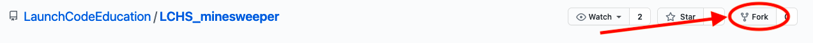

25.1. Introduction¶
Welcome to the end of LaunchCode’s LCHS course! In this chapter, we will use our Python, web development, and database skills to build a game application. Each of the following pages includes a video tutorial, sample code, and a text summary for one piece of the project.
The goal is to build a Minimum Viable Product. The idea is to keep the scope, short and simple. This is a bare-bones, without bells and whistles Minesweeper game. Consider this a prototype for a more refined program. By the end of the chapter, we will have a working game, but it will contain a few gaps and rough edges. Repeated playing of the game will identify improvements that could be made, but these won’t prevent the app from operating.
Once you have your prototype up and running, feel free to make changes and add different features to make the project your own!
The video clip below demonstrates what the finished project will look like. It also provides game instructions for those who might not be familiar with how to play Minesweeper.
25.1.1. Project Setup¶
For this project, you will create and update a remote repository in your GitHub account. As you work on the local copy of your code, you should frequently push those changes up to GitHub.
Here’s how to create your personal Minesweeper repository.
25.1.1.1. Fork the Starter Code¶
Login to your GitHub account.
Navigate to LaunchCode’s Minesweeper repository.
Fork the repository. This will create an independent copy of the code in your account.
Click the Fork button to copy the repo to your account.¶
After forking, you should be redirected back to your account. If this does not happen automatically, navigate to YOUR Minesweeper repository page.
Click the Code button and copy the HTTPS URL.
{kind=link}
25.1.1.2. Create Your Local Project¶
Launch Visual Studio Code and open your
local_practicedirectory.Use the URL you copied in step 5 above to clone the Minesweeper starter code.
$ git clone URL-copied-from-GitHub
The project directory is called
LCHS_minesweeper. Use the File menu in VS Code to open this folder.Follow the usual process to install a new virtual environment. Name the environment
game-env. (If you want to use a different name, that’s fine. Just remember to update the.gitignorefile).Activate the virtual environment and install Flask.
OK, you’re ready to go!